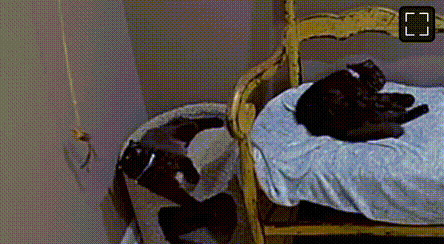

<body>
<!DOCTYPE html>
<html xmlns="http://www.w3.org/1999/xhtml" lang xml:lang>
<head>
  <meta charset="utf-8" />
  <meta name="generator" content="pandoc" />
  <meta name="viewport" content="width=device-width, initial-scale=1.0, user-scalable=yes" />
  <title>Submissions</title>
  <link rel="stylesheet" href="../style.css">
</head>
<header id="title-block-header">
<h1 class="title">Submissions</h1>
</header>
<nav>
  <center>
<br><br>
  </center>
  <center><em>
      <a href="https://docs.google.com/forms/d/e/1FAIpQLSdr_RN2r3UK-PWluAdY7JRHXItbn-eejOz3pDx-7VGwf33YaQ/viewform?usp=header">Submit anything here.</a>
  </em>
  <br>
    <br>
  </center><br>
              <em>
            PDF viewer not supported on mobile.<br>
            <br></em>
</nav>
<nav>
  8/27/2025 14:50:01 by Hobo Henry.<br><br>
  I met the other northbound hiker yesterday, "Earthy" or Ollie. He took a short day due to rain and beer.<br><br>

More stars last night than I'd ever seen. Strange alien highland on top of the world. I slept cowboy watching the Milky Way for half the night before the dew set in.<br><br>

I haven't spoken more than six words to anyone in two days. I haven't known what time it is since Sunday. I think I'm going sane. <br><br>

Storm chased me over the mesa before surrounding me and hurling lightning a half mile away at the treeline. It kind of hung in the air for a second, splitting the view in two before sending red sparks flying. I set up camp ASAP in the willow shrub while God used a chisel and hammer above.<br><br>

I think I should lay off the unlimited $1 coffee in Lake city. I forgot I'm not allowed to pick my nose just anywhere.<br><br>

You aren't him, aren't ya! - signing off<br><br>
  8/26/25 19:31:55 "Project 1_MG.pdf" A post-tonal analysis of a Bartók work by miss little jazz master.<br><br>
 <iframe img src="./Project 1_MG.pdf" width="575" height="600"></iframe><br><br>
</nav>
<a href="../blog.html">Back</a>
</body>
</html>